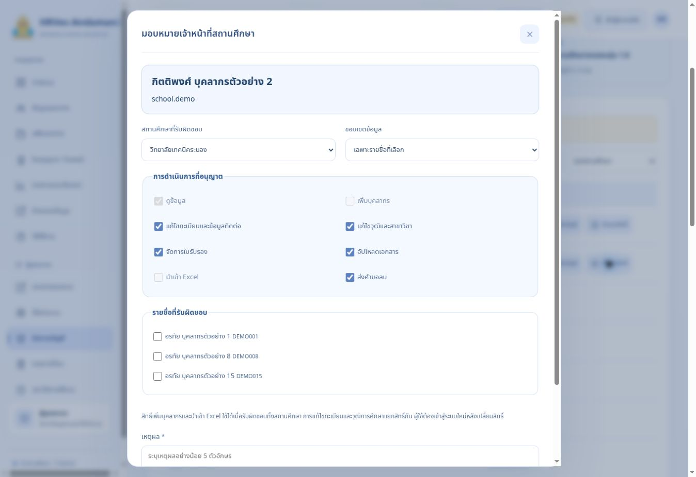

HRVec-Andaman2 รุ่น 1.8 — คู่มืออัปเกรดและใช้งาน
จัดทำ 22 ตุลาคม 2569
สถานะการอัปเกรด 22 ตุลาคม 2569
ชุดนี้มีโค้ดหน้าเว็บ ฐานข้อมูล ฟังก์ชันหลังบ้าน Apps Script และการทดสอบครบสำหรับรุ่น 1.8 หน้าสาธิตใช้ข้อมูลสมมติในเบราว์เซอร์
อัปเกรดฐานข้อมูลจริงและเผยแพร่ Edge Functions รุ่น 1.8 แล้ว ตามการอนุญาตของเจ้าของโครงการ ตรวจฐานข้อมูลได้ 1.8.0 และฟังก์ชันทั้งสองเป็น ACTIVE หมายเลข Deployment 5 ของ Supabase เป็นลำดับการเผยแพร่ ไม่ใช่เลขรุ่นแอป
สำหรับโครงการ HR นี้ ไม่ต้องรัน SQL หรือ Deploy ฟังก์ชันซ้ำ ขั้นตอนที่ 2–3 ด้านล่างเก็บไว้สำหรับตรวจสอบหรือติดตั้งใหม่ งานที่เหลือคืออัปเดตหน้าเว็บ GitHub Pages ตามขั้นตอนที่ 5 อัปเดต Apps Script ตามขั้นตอนที่ 4 แล้วเข้าสู่ระบบด้วยบัญชีเดิมเพื่อมอบหมายเจ้าหน้าที่และตรวจรับตามขั้นตอนที่ 6–10 หน้าสาธิตในแชตยังใช้ข้อมูลสมมติ
โครงการ HR ที่ถูกต้องคือ oftlfxiywhtoftxluviv ไม่ใช้โครงการเก่า unbxltvodbcesqcmorjk
1. เปิดไฟล์และเตรียมโปรแกรม
ZIP สำหรับ GitHub ใช้โครงสร้างรากโดยตรง ต้องพบ package.json, dist, supabase, apps-script, scripts, tests, docs, deployment, .github, .gitignore, .env.example อย่าอัปโหลด ZIP เป็นไฟล์เดียวหรือสร้างโฟลเดอร์ครอบซ้ำ หากไม่เห็นไฟล์ที่ขึ้นต้นด้วยจุด ให้เปิด File Explorer → View → Show → Hidden items
เก็บสำเนาโค้ดรุ่นเดิมและค่าการเชื่อมต่อก่อนอัปเกรด หากมีข้อมูลจริงแล้วให้สำรองฐานข้อมูลและไฟล์ Drive ด้วย การสำรอง JSON ของแอปเก็บทะเบียนและรายการอ้างอิงไฟล์ ไม่ได้คัดลอกไฟล์แนบทั้งหมดและไม่ได้สำรองรหัสผ่าน Auth
2. อัปเกรดฐานข้อมูลเดิมจากรุ่น 1.7
ใช้ Chrome หรือ Edge เปิด https://supabase.com/dashboard/project/oftlfxiywhtoftxluviv
- เลือก SQL Editor → New query
- ใช้ VS Code เปิด
supabase/migrations/20261022083857_school_delegation_v18.sql
- คัดลอกทั้งไฟล์ไปวางใน SQL Editor ของโครงการ HR
- สำหรับฐานข้อมูลเดิมรุ่น 1.7 ที่ยังไม่อัปเกรดและได้รับอนุญาตแล้ว กด Run หนึ่งครั้ง โครงการ HR นี้ทำเสร็จแล้ว ให้ใช้คำสั่งตรวจในข้อถัดไปแทน
- ตรวจด้วยคำสั่งต่อไปนี้ ต้องได้
1.8.0
select public.hr_schema_version();
- Table Editor ต้องมีตารางเดิมครบ และเพิ่ม
school_assignments, administration_changes
- ตาราง
schools เพิ่ม is_active และ revision รหัสสถานศึกษาและบัญชีเดิมคงอยู่
ฐานข้อมูลเดิมห้ามรัน schema.sql ติดตั้งทับ และห้ามรัน migration รุ่น 1.7 ตามหลังรุ่น 1.8 เพราะจะนำกฎเดิมกลับมาใช้ สำหรับโครงการใหม่ว่างเท่านั้นให้ใช้ supabase/schema.sql ฉบับเต็ม ซึ่งรวมรุ่น 1.8 แล้ว
หากต้องการตรวจว่าติดตั้งฟังก์ชันรุ่นหรือยัง ให้ใช้ select to_regprocedure('public.hr_schema_version()'); ค่า NULL หมายถึงยังไม่มีฟังก์ชันนี้
3. เผยแพร่ฟังก์ชันหลังบ้าน
ใน VS Code เปิดโฟลเดอร์หลักรุ่น 1.8 → Terminal → New Terminal รันทีละคำสั่งและรอจนเสร็จ
node --version
npx.cmd supabase --version
npx.cmd supabase login
npx.cmd supabase link --project-ref oftlfxiywhtoftxluviv
npx.cmd supabase functions deploy hr-bridge --project-ref oftlfxiywhtoftxluviv --no-verify-jwt --use-api
npx.cmd supabase functions deploy hr-accounts --project-ref oftlfxiywhtoftxluviv --no-verify-jwt --use-api
npx.cmd supabase functions list --project-ref oftlfxiywhtoftxluviv
ใช้ npx.cmd เพื่อหลีกเลี่ยง npx.ps1 ถูกบล็อก ไม่ต้องเปลี่ยน Execution Policy ของ Windows ตัวเลือก --use-api ทำให้ไม่ต้องใช้ Docker สำหรับ Deploy นี้ ทั้งสองฟังก์ชันยังตรวจผู้ใช้ บัญชี เซสชัน และสิทธิ์ภายในโค้ด
เปิด Supabase → Edge Functions → Secrets ตรวจ:
สำหรับเว็บไซต์ในโครงการนี้ใช้ ALLOWED_ORIGINS:
https://hrvec-adaman2.github.io,https://hr-andaman2.muangyor.chatgpt.site
เจ้าของ GitHub คือ HRVec-Adaman2 ส่วน Repository คือ hrvec-andaman2 สะกดต่างกัน ไม่ใส่ /hrvec-andaman2 ต่อท้าย Origin ไม่ส่ง .env.bootstrap ขึ้น Secrets หรือ GitHub
4. อัปเดต Apps Script เดิม
- เปิดโครงการ Apps Script เดิมใน Chrome หรือ Edge
- แทนเนื้อหา Code.gs ด้วย
apps-script/Code.gs ของรุ่นนี้ แล้ว Save
- Script Properties เดิมต้องยังมี DRIVE_FOLDER_ID, SHEET_ID, BRIDGE_SECRET, SUPABASE_URL และ SUPABASE_SERVICE_ROLE_KEY ของโครงการ HR
- เลือก Deploy → Manage deployments → แก้ไข Deployment เดิม → New version → Deploy เพื่อเก็บ URL /exec เดิม
- หากสร้าง Deployment ใหม่จน URL เปลี่ยน ต้องแก้ GAS_URL ใน Supabase Secrets ให้ตรง
การอัปเดตนี้ทำให้สำรองรายวันรวมตารางสิทธิ์และประวัติใหม่ด้วย เก็บไฟล์เอกสาร Drive แบบส่วนตัวตามเดิม
5. เผยแพร่หน้าเว็บ GitHub Pages
Repository: https://github.com/HRVec-Adaman2/hrvec-andaman2
เว็บไซต์: https://hrvec-adaman2.github.io/hrvec-andaman2/
- แตก GitHub Source ZIP รุ่น 1.8 แล้วแทนไฟล์โค้ดเดิมทั้งชุดในโฟลเดอร์โครงการ เก็บ .env และ .env.bootstrap ไว้เฉพาะเครื่องผู้ติดตั้ง
- ชุด GitHub Source สำหรับส่งมอบตั้ง
dist/config.js ให้โครงการ HR แล้ว หากใช้โค้ดจากหน้าสาธิต ให้คัดลอก deployment/config.production.js เป็น dist/config.js หลังอัปเกรดฐานข้อมูลและฟังก์ชันแล้ว
- ตรวจว่า config.js ใช้ URL โครงการ HR และ publishable key ห้ามใส่ service_role หรือ sb_secret ในหน้าเว็บ
- รัน
npm run check และ npm test ใน Terminal
- VS Code → Source Control → ตรวจว่าไม่มี .env/.env.bootstrap → Commit → Sync Changes
- ทางเลือกผ่าน Chrome: เปิดราก Repository → Add file → Upload files → ลากไฟล์และโฟลเดอร์ที่แตกแล้วทั้งชุด ไม่ลาก ZIP หรือโฟลเดอร์ครอบด้านนอก
- ตรวจ package.json และ .github/workflows/pages.yml อยู่ตำแหน่งเดิม รวมทั้ง .gitignore กับ .env.example
- GitHub → Settings → Pages → Source: GitHub Actions
- Actions → Deploy HRVec-Andaman2 to GitHub Pages → รอสีเขียว หรือ Run workflow → main
- เปิดเว็บไซต์ กด Ctrl + F5 และเข้าสู่ระบบใหม่
GitHub Pages กับ https://hr-andaman2.muangyor.chatgpt.site เป็นคนละการเผยแพร่ การอัปเดตเว็บไซต์หนึ่งไม่อัปเดตอีกเว็บไซต์อัตโนมัติ หน้าสาธิตในแชตคง config.js ว่างเพื่อใช้ข้อมูลสมมติ
6. เพิ่ม/แก้ไข/ปิดใช้งาน/ลบสถานศึกษา
เปิดเว็บไซต์จริงใน Chrome หรือ Edge เข้าบัญชี admin ด้วยรหัสปัจจุบัน การอัปเกรดไม่รีเซ็ตรหัสเดิมและไม่ต้อง bootstrap admin ซ้ำ
- เพิ่ม: ตั้งค่าระบบ → สถานศึกษา → เพิ่มสถานศึกษา → กรอกชื่อ จังหวัด เหตุผล → บันทึก รหัสสร้างอัตโนมัติ รองรับเกิน 7 แห่ง
- แก้ไข: เลือกแถว → แก้ไข → กรอกข้อมูลและเหตุผล → บันทึก
- ปิดใช้งาน: เก็บบุคลากรและประวัติเดิม หยุดเพิ่ม/นำเข้าบุคลากรใหม่ เจ้าหน้าที่ยังอ่านข้อมูลที่รับผิดชอบได้ แต่เขียนข้อมูลของสถานศึกษาที่ปิดไม่ได้ แอดมินยังตรวจและแก้ไขข้อมูลเดิมได้
- เปิดใช้งาน: กดเปิดใช้งาน ระบุเหตุผล การมอบหมายเดิมจะกลับมามีผลตามสิทธิ์
- ลบถาวร: ใช้ได้เฉพาะเมื่อไม่มีบุคลากรหรือสิทธิ์อ้างอิง ต้องกรอกรหัสสถานศึกษาซ้ำและยืนยัน บุคลากรในรายการที่ลบก็ถือเป็นข้อมูลอ้างอิง จึงควรปิดใช้งานเมื่อมีประวัติแล้ว
อย่าเปลี่ยนชื่อสถานศึกษาเดิมเพื่อแทนการเพิ่มสถานศึกษาใหม่ เพราะบุคลากรเดิมยังอ้างอิงรหัสเดิม
7. มอบหมายเจ้าหน้าที่ตามความรับผิดชอบ
- เพิ่มหรือนำเข้าทะเบียนบุคลากรของเจ้าหน้าที่ก่อน
- แอดมินเปิด จัดการบัญชี → เลือกรายชื่อ → สร้างบัญชี กำหนด Username และรหัสเริ่มต้นแยกคน
- ผู้ใช้เข้าสู่ระบบและเปลี่ยนรหัสเริ่มต้นตามที่ระบบกำหนด
- แอดมินเปิด จัดการบัญชี → กำหนดสิทธิ์ ของบุคคลนั้น
- เลือกสถานศึกษาที่รับผิดชอบ อาจต่างจากสถานศึกษาที่เจ้าหน้าที่สังกัดได้
- เลือก ทั้งสถานศึกษา หรือ เฉพาะรายชื่อที่เลือก แล้วติ๊กรายชื่อ
- เลือกสิทธิ์ตามงาน ระบุเหตุผล และบันทึก
- ให้ผู้ใช้เข้าสู่ระบบใหม่ เซสชันเดิมจะใช้ต่อไม่ได้หลังเปลี่ยนสิทธิ์
- หากรับผิดชอบหลายวิทยาลัย ให้มอบหมายแยกสถานศึกษา บัญชีเดียวมีหลายการมอบหมายได้

เพิ่มบุคลากรและนำเข้า Excel ใช้ได้เมื่อรับผิดชอบทั้งสถานศึกษา เมื่อเลือกเฉพาะรายชื่อ ระบบจะปิดสองตัวเลือกนี้ การนำเข้าวุฒิหรือใบรับรองต้องมีสิทธิ์ข้อมูลส่วนนั้นด้วย
เจ้าหน้าที่ไม่สามารถย้ายสถานศึกษาของบุคลากร ผูกบัญชี จัดการบัญชีคนอื่น เปลี่ยนสิทธิ์ อนุมัติเอกสาร ลบจริง หรือกู้คืนรายการ บุคลากรทั่วไปยังดูแลข้อมูลติดต่อ รูปโปรไฟล์ และเอกสารของตนเองได้
8. แก้ไขหรือถอนสิทธิ์
จัดการบัญชี → ส่วนสิทธิ์เจ้าหน้าที่สถานศึกษา → แก้ไขสิทธิ์ หรือ ถอนสิทธิ์ → ระบุเหตุผล → บันทึก แล้วให้ผู้ใช้เข้าสู่ระบบใหม่ หากถอนทุกการมอบหมาย บัญชีจะกลับเป็นบุคลากรทั่วไปและยังมีแฟ้มตนเอง
ปิดใช้งานสถานศึกษาจะเก็บการมอบหมายไว้ หากยกเลิกหน้าที่ถาวรให้ถอนสิทธิ์ด้วย ส่วนพักบัญชีทำให้เข้าใช้งานไม่ได้ทั้งบัญชี แอดมินยังรีเซ็ตรหัสและเปิด/พักบัญชีเจ้าหน้าที่ได้
9. นำเข้าข้อมูลพร้อมใบรับรอง
ข้อมูลบุคลากร → ดาวน์โหลดแม่แบบ .xlsx ปุ่มนี้สร้างไฟล์ตามรายการสถานศึกษาและสิทธิ์ปัจจุบัน
- ชีต บุคลากร หนึ่งคนต่อหนึ่งแถว employee_code คือเลขที่ตำแหน่ง ไม่ต้องมีคอลัมน์สถานะ
- ชีต ใบรับรองวิชาชีพ หนึ่งใบต่อหนึ่งแถว ใช้ employee_code เดิมซ้ำได้เมื่อเป็นคนเดียวกัน ไม่เพิ่มคอลัมน์ใบที่ 2/3
- หลายสาขาของวุฒิสูงสุดเดียวกันคั่นด้วย
; ใน education_majors
- เลขที่ตำแหน่งและโทรศัพท์ใช้รูปแบบข้อความเพื่อรักษาศูนย์นำหน้า วันที่ใช้ YYYY-MM-DD ค.ศ.
- ชีต รายการอ้างอิง แสดงรหัสสถานศึกษา ชีตตัวอย่างไม่นำเข้าอัตโนมัติ
- อัปโหลด → ตรวจข้อมูล → ยืนยัน หากแถวหนึ่งผิดหรือนอกสิทธิ์ ทั้งชุดจะไม่ถูกบันทึก
- นำเข้าเพื่อเพิ่มรายชื่อใหม่ การแก้ไขข้อมูลเดิมใช้เมนูแก้ไขและตรวจประวัติ
10. ตรวจหลังติดตั้งและแก้ปัญหา
ทดสอบด้วยบัญชีแอดมิน เจ้าหน้าที่ และบุคลากรจริงหลังติดตั้ง: เข้าระบบด้วยบัญชีเดิม เพิ่มสถานศึกษา มอบหมายเฉพาะรายชื่อ แก้ข้อมูลตามสิทธิ์ ลองเปิดข้อมูลนอกสิทธิ์ นำเข้า Excel ข้ามวิทยาลัย ทดสอบอัปโหลด/ดาวน์โหลดไฟล์หนึ่งไฟล์ แล้วถอนสิทธิ์และเข้าสู่ระบบใหม่ ตรวจประวัติผู้ดำเนินการกับเหตุผลทุกครั้ง
การทดสอบบัญชีจริงและ Google Drive ครบวงจรยังต้องทำหลังอัปเดตหน้าเว็บและ Apps Script ชุดทดสอบที่ส่งมอบใช้ข้อมูลสมมติในฐานข้อมูลแยก ไม่สร้างบุคลากรจริงและไม่เปลี่ยนรหัสแอดมิน
11. ผลตรวจความปลอดภัยและขอบเขตที่ยังต้องตรวจรับ
ตรวจ Supabase Advisors หลังอัปเกรดแล้ว ไม่มีข้อแจ้งเตือนตาราง public ที่ไม่ได้เปิด RLS ฟังก์ชัน API ใหม่ทั้งสามเป็น SECURITY INVOKER และล็อก search_path ส่วน helper ที่จำเป็นต้องใช้สิทธิ์สูงอยู่ใน schema hr_private พร้อมตรวจบัญชีและสิทธิ์
Advisors ยังเตือน SECURITY DEFINER ของ API เดิม 9 ฟังก์ชันที่ระบบใช้ตรวจบัญชีและบันทึกผ่านการตรวจสิทธิ์ ต้องตรวจเนื้อหาฟังก์ชันร่วมกับการจำกัด EXECUTE ไม่เปลี่ยนเป็น INVOKER ทันทีโดยไม่ตรวจผลกระทบ รายละเอียด: https://supabase.com/docs/guides/database/database-linter?lint=0029_authenticated_security_definer_function_executable
Auth ยังไม่ได้เปิดตรวจรหัสผ่านที่เคยรั่วไหล เจ้าของโครงการตรวจแผนบริการและเปิดได้ที่ Authentication → Settings/Security ตามหน้า Dashboard ของตน คู่มือ: https://supabase.com/docs/guides/auth/password-security#password-strength-and-leaked-password-protection
ด้านประสิทธิภาพยังมีคำแนะนำดัชนี Foreign Key 5 จุด และการเรียก auth ใน RLS 3 จุดจากโครงสร้างเดิม บันทึกไว้ในผลตรวจ ไม่ขยาย migration รุ่นนี้ไปแก้ส่วนอื่น ข้อมูลขณะตรวจยังไม่มีทะเบียนบุคลากร จึงยังไม่ได้วัดประสิทธิภาพจากปริมาณใช้งานจริง รายละเอียด: https://supabase.com/docs/guides/database/database-linter?lint=0001_unindexed_foreign_keys และ https://supabase.com/docs/guides/database/database-linter?lint=0003_auth_rls_initplan